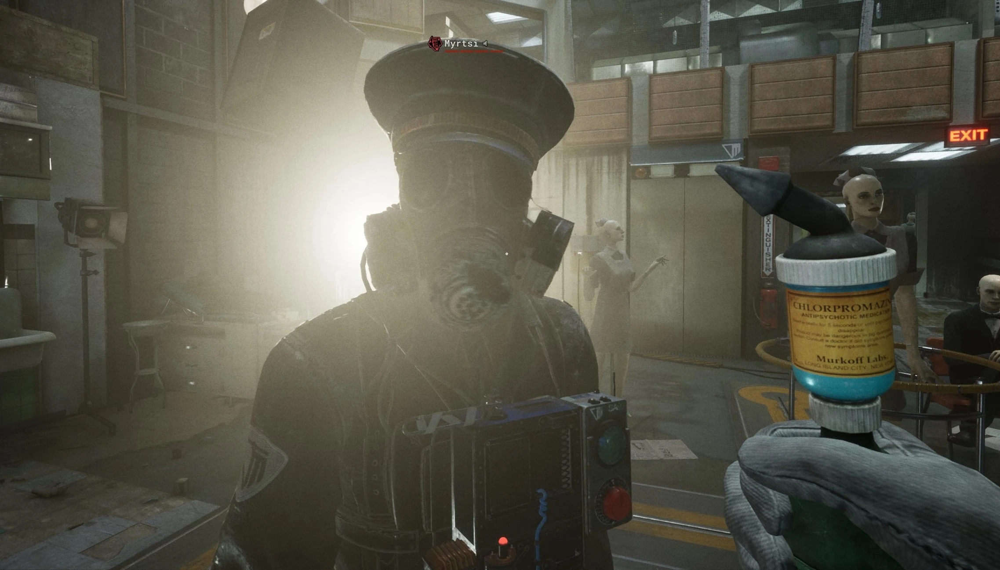
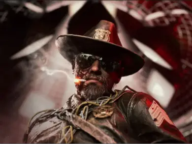
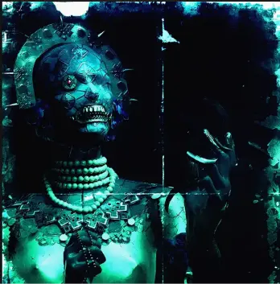
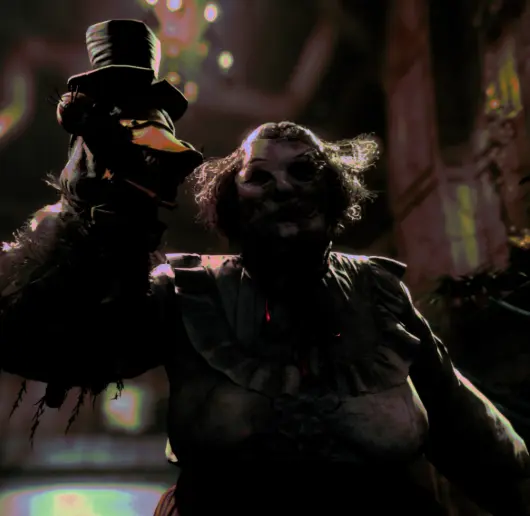
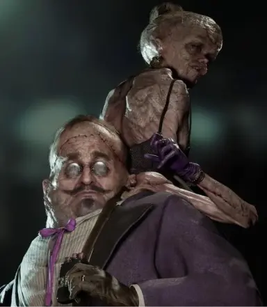
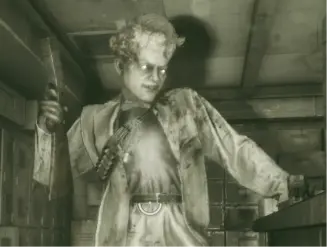

Haluatko sinäkin parantua? Haluatko sinäkin miellyttää Pääsiäismiestä? Ehkä jopa haluat nesteyttää liiton. Olet oikeassa paikassa! Tervetuloa Murkoff Companyn terapiaan!
Tukenasi ovat mitä ihanimmat Prime Assetimme pieni mutta pippurinen Franco “Friday” Barbi, hellyyttävä Mother “Goon” Gooseberry, sisarukset Otto & Arora, kaunotar Liliya “Gawddamn” Bogomolova sekä ikioma sheriffimme Leland “Papa” Coyle.
Tavoitteemme Murkoff Companyllä on auttaa juuri sinua päästämään irti synneistäsi ja synkästä menneisyydestäsi;
olemme tilaisuutesi syntyä uudelleen! Meillä osallistut terapiaan eli trialeihin, joista ‘selviytymällä’ lähestyt uutta tulevaisuuttasi.
Saat meiltäkäyttöösi erilaisia laadukkaita lääkkeitä sekä oman insinöörimme Corneliuksen taiteilemat rigit.
Liity jo tänään tuhansien tyytyväisien reagenttiemme mukaan luomaan uutta tulevaisuutta niin sinulle kuin maallemmekin.
Yhdessä ammattimaisten Prime Assettiemme, aktiivisen henkilökuntamme sekä totta kai nerokkaan herra Pääsiäismiehen
avulla pääset ulos laitoksesta uudelleensyntyneenä ennen kuin huomaatkaan!





